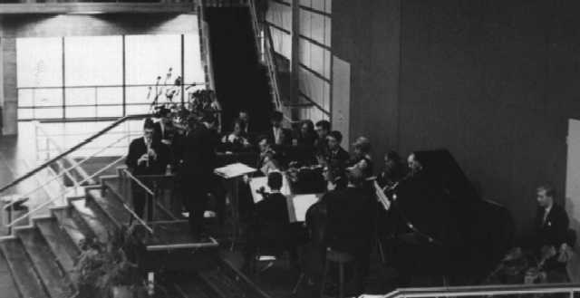
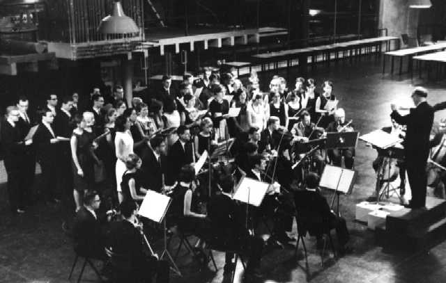
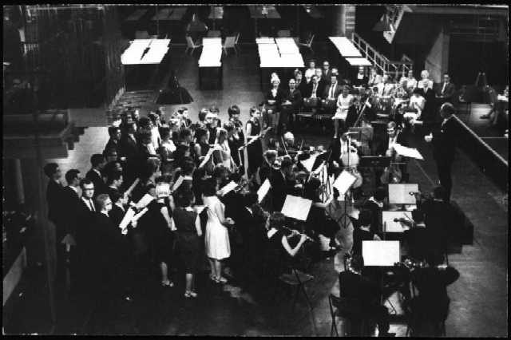

| |
|
"Concert Eindhovens Studenten Muziekgezelschap
Dinsdag 17 mei gaven het koor en het orkest van het Eindhovens Studenten
Muziekgezelschap voor de tweede maal hun jaarlijkse concert. De
belangstelling, hoewel duidelijk groter dan het vorig jaar, was zeker niet in
evenredigheid met hetgeen gepresteerd werd.
De techniek was soms niet helemaal gaaf, maar dit werd ruimschoots vergoed
door het grote enthousiasme waarmee het programma, dat een achttal werken
omvatte, werd uitgevoerd. Het koor, bestaande uit "heren" van de T.H. en
"meisjes" van de Sociale Academie, zoals de dirigent Antoon Maessen
meedeelde, zong voor de pauze drie madrigalen van Orlando di Lasso en
besloot de uitvoering, begeleid door orgel en orkest, met de koraalcantate
van Johann Pachebel: Was Gott tut, das ist wholgetan. Organist was drs.
Karel Post. Solisten waren de heer Sipman in een concert voor altblokfluit
en strijkorkest van Antonio Vivaldi en de heer Barentsen in een orgelwerk
van Johann Sebastian Bach. Verder werden werken van Telemann, Bartelink,
Gossec en Scarlatti uitgevoerd. De beide dirigenten, de heer Adriaan
Lenaarts (orkest) en de heer Antoon Maessen (koor) werd aan het eind van de
avond bloemen aangeboden. De vorderingen die koor en orkest in het afgelopen
jaar hebben gemaakt, waren tijdens dit concert, dat werd gegeven in de hal
van het auditorium, duidelijk merkbaar en men mag hopen dat het Eindhovens
Studenten Muziekgezelschap in de toekomst nog vaak van zich zal laten
horen."
|
|
| |
|
Het programmaboekje is bijzonder verzorgd met blauwe kaft, met daarop een
impressie van "Torgel", met daarin naast een overzicht van de werken
(welke hieronder volgt) ook een beschrijving van alle werken.
PROGRAMMA
Franse Ouverture
grave allegro grave |
G.P. Telemann |
Concert voor altblokfluit en strijkorkest
allegro largo
allegro
solist W.H.M.Sipman |
A. Vivaldi |
Drie madrigalen
O occhi manza mia
Quand mon mari
Von morgens
früh |
O. di Lasso |
Fantasia et Fuga
orgel: W.M.Barentsen |
J.S. Bach |
Pavane - Gaillarde - Pavane |
B. Bartelink |
| Pauze |
Symfonie in d groot
allegro andante presto |
F.J. Gossec |
Sympfonie in e klein
allegro adagio allegro |
A. Scarlatti |
Koraalcantate
"Was Gott tut, das ist wohl getan"
orgel: drs. K.
Post |
J. Pachelbel |
|
|
| |
|

Het orkest (voor de pauze) gesitueerd in de hal van het auditorium, op de
trappen die naar de huidige Blauwe Zaal leiden.
Solist: Wim Sipman; Dirigent:
naar we aannemen de heer Lénaarts.

Na de pauze (?) werd het concert voortgezet aan de andere kant van de zaal,
onder het orgel.
Dirigent: Antoon Maessen.

Let op de VIP's die achter de cello's zijn geplaatst!
|
|